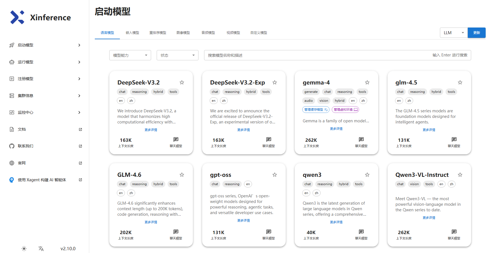

Xinference部署与应用实战2026：一个平台搞定LLM+Embedding+Rerank的私有化推理
一、为什么是 Xinference
如果你做过私有化大模型落地，大概率踩过这样的坑：用 vLLM 跑通了一个 LLM，结果发现 RAG 还需要 Embedding 模型，知识库召回质量差又得加 Rerank 模型，语音场景还要 ASR/TTS——于是你同时维护了三四套不同的推理服务，端口、显存、API 格式各不相同，运维直接崩溃。
Xinference（全称 Xorbits Inference）就是来解决这个问题的。 它由 Xprobe 团队开源，定位是一个大模型推理服务平台：用一个 OpenAI 兼容的 API，统一管理和服务各类开源模型。它最吸引人的一句话承诺是——在你的应用里只改一行代码（换掉 base_url），就能把 OpenAI GPT 替换成任意开源模型。（来源：Xinference GitHub）
要分清一个概念：Xinference 不是推理引擎，而是推理引擎之上的编排平台。 vLLM、llama.cpp 这些是"引擎"，负责把单个模型跑得快；Xinference 把这些引擎封装在底层，对上提供统一的模型管理、API、WebUI 和集群能力。简单说：vLLM 让一个模型跑得快，Xinference 让一堆模型管得省心。
二、核心能力：它到底比裸用 vLLM 强在哪
| 能力 | 说明 |
|---|---|
| 一键部署 | 单条命令拉起内置的前沿开源模型，无需手写启动参数 |
| 全模型类型 | 不止 LLM，还涵盖 Embedding、Rerank、语音识别(ASR)、TTS、图像生成、多模态视觉模型 |
| OpenAI 兼容 API | RESTful API 兼容 OpenAI（含 Function Calling），应用零成本迁移 |
| 多引擎可选 | 后端支持 vLLM、llama.cpp（自研 Xllamacpp 绑定）、Transformers、GGML、TensorRT 等 |
| 异构硬件 | GPU / CPU / Apple Metal 都能跑，从笔记本到生产集群通吃 |
| 分布式部署 | 多机多卡集群、跨 worker 分布式推理、多副本共享 KV cache |
| 多种接口 | WebUI、CLI、Python 客户端、RPC 任你选 |
官方给出的横向对比里，相比 FastChat、OpenLLM、RayLLM，Xinference 在 Embedding、Rerank、多模态、音频、图像、Function Calling、多节点集群 上覆盖最全。
这正是它的核心差异化：搭一套 RAG 所需的全部模型（LLM + Embedding + Rerank），一个平台就够了。
三、2026 年的新进展
从官方近期动态看，Xinference 的演进方向和整个行业的"Agent 化"高度同步：
- Agent 原生服务：集成自研
Xagent，支持动态规划、工具调用、自主多步推理，从"静态推理管道"升级为 Agent 能力。 - Auto batch 自动批处理：并发请求自动合批，显著提升吞吐。
- Xllamacpp：团队自研的 llama.cpp Python 绑定，支持 continuous batching，更适合生产环境。
- 分布式增强：多副本之间共享 KV cache，进一步省显存、提并发。
- 内置最新模型：DeepSeek V4、MiniMax-M2.7、GLM-5.1 / GLM-5、Qwen3.6 / Qwen-3.5、Gemma-4、Qwen3-TTS 等都已开箱支持。
- 三种版本：社区版（开源免费）、企业版、云版。
四、部署实战：四种方式任选
方式一：pip 本地安装（最快上手）
# 全量安装（包含各推理后端，体积较大）
pip install "xinference[all]"
# 启动本地实例，默认监听 9997 端口
xinference-local
[all] 会把所有后端依赖一起装上，适合快速体验。生产环境建议按需精简，比如只要 vLLM 后端：
pip install "xinference[vllm]"
方式二：Docker（GPU 环境推荐）
前提：宿主机已安装 Docker、CUDA 和 NVIDIA Container Toolkit。
docker run --name xinference -d -p 9997:9997 \
-e XINFERENCE_HOME=/data \
-v /your/host/path:/data \
--gpus all \
xprobe/xinference:latest xinference-local -H 0.0.0.0
关键参数说明：
- -v /your/host/path:/data：挂载宿主机目录做模型缓存持久化，避免容器重启后重复下载几十 GB 的模型
- --gpus all：放开全部 GPU
- -H 0.0.0.0：监听所有网卡，容器外才能访问
方式三：Kubernetes（Helm，生产集群）
要求 K8s 集群已具备 GPU 支持：
# 添加 helm 仓库
helm repo add xinference https://xorbitsai.github.io/xinference-helm-charts
# 更新并查询可用版本
helm repo update xinference
helm search repo xinference/xinference --devel --versions
# 安装
helm install xinference xinference/xinference -n xinference --version 0.0.1-v<版本号>
方式四：云托管 / Railway 一键部署
不想自己折腾硬件的团队，可在 Railway 等平台一键拉起一个 OpenAI 兼容的推理服务，适合快速验证。
⚠️ 安全提示：
-H 0.0.0.0会把服务暴露在所有网卡上，且 Xinference 默认不带鉴权。请勿直接暴露到公网——务必放在内网，或前置带认证的反向代理（如 Nginx + Token 校验），否则任何人都能调用你的算力和模型。
五、三种调用方式
服务启动后，访问 WebUI（http://localhost:9997） 是最直观的入口：在界面里选择模型、配置引擎和参数、点击 launch 即可上线模型。

▲ Xinference WebUI 的「启动模型」页面：内置 DeepSeek-V3.2、GLM-4.6、Qwen3、gpt-oss、Qwen3-VL 等前沿模型，每张卡片标注了模型能力（chat / reasoning / vision / tools）、语言和上下文长度，无需手写启动参数即可一键拉起。
CLI 方式
# 启动一个模型
xinference launch --model-name qwen3.6 --model-engine vllm --size-in-billions 7
# 查看正在运行的模型
xinference list
Python 客户端方式
from xinference.client import Client
client = Client("http://localhost:9997")
# 启动模型，拿到 model_uid
model_uid = client.launch_model(
model_name="qwen3.6",
model_engine="vllm",
)
# 对话
model = client.get_model(model_uid)
print(model.chat(
messages=[{"role": "user", "content": "用一句话解释什么是 RAG"}]
))
Embedding 调用同样简单：
emb_uid = client.launch_model(model_name="bge-m3", model_type="embedding")
emb_model = client.get_model(emb_uid)
emb_model.create_embedding("中国的首都是哪里？")
OpenAI 兼容方式（迁移成本最低）
这是 Xinference 最实用的能力——已有的 OpenAI 代码只改 base_url：
from openai import OpenAI
client = OpenAI(
base_url="http://localhost:9997/v1",
api_key="not-needed", # 本地服务无需真实 key
)
resp = client.chat.completions.create(
model="qwen3.6",
messages=[{"role": "user", "content": "你好"}],
)
print(resp.choices[0].message.content)
六、实战场景：搭一套私有化 RAG 知识库
这是 Xinference 最主流、最能体现价值的用法。一个 Xinference 实例同时部署 LLM + Embedding + Rerank 三件套，对接 Dify / FastGPT / RAGFlow / MaxKB，即可搭出数据不出内网的企业知识库。
典型的模型组合：
| 角色 | 推荐模型 | 作用 |
|---|---|---|
| 生成（LLM） | Qwen3.6 / DeepSeek V4 / GLM-5 | 根据召回内容生成答案 |
| 向量化（Embedding） | bge-m3 / bge-large-zh | 把文档和问题转成向量 |
| 重排序（Rerank） | bge-reranker-v2-m3 | 对召回结果精排，显著提升准确率 |
落地步骤概览：
1. 在 Xinference 中分别 launch 上述三个模型，各自获得一个 model_uid / 模型名
2. 进入 Dify → 模型供应商 → 选择 Xinference，填入服务地址 http://<ip>:9997 和模型名
3. 在 Dify 的知识库中，Embedding 选 bge-m3、Rerank 选 bge-reranker，对话应用的推理模型选 Qwen3.6
4. 上传文档、构建知识库，即可得到一个全本地化的 RAG 问答系统
很多团队最初只用 Xinference 跑 LLM，后来发现它真正不可替代的价值是把 Rerank 这种"配角模型"也一键管起来了——而 Rerank 恰恰是 RAG 召回质量的关键。
其他常见场景： - 替换 OpenAI API：应用改一行 base_url，GPT 换成开源模型，数据合规 - 多模态服务：ASR 语音转写、TTS 合成、文生图、视觉理解 - 接入 LangChain / LlamaIndex：作为本地模型 provider 嵌入 Agent / RAG 链路
七、选型建议与避坑清单
什么时候该选 Xinference
- 需要一站式管理多种类型模型，尤其是 RAG 的 LLM + Embedding + Rerank 组合
- 要私有化部署、数据合规、从 OpenAI 平滑迁移
- 希望有 WebUI 管理，不想纯命令行运维多个 vLLM 进程
什么时候直接用 vLLM 更合适
- 只跑单个 LLM、追求极致吞吐和最低延迟，不需要多模型管理和多模态
- 这种情况下直接上 vLLM 更轻量，毕竟 Xinference 本质是在引擎之上加了一层编排
避坑清单
- 安装依赖重：
[all]体积很大，生产环境按需精简后端（如只装[vllm]） - 国内下载慢：配置 ModelScope（魔搭）镜像 作为模型源，避免 HuggingFace 网络问题。可设环境变量
XINFERENCE_MODEL_SRC=modelscope - 显存规划：同时跑 LLM + Embedding + Rerank 要预留好显存，多卡注意 tensor parallel 配置
- 不要裸奔公网：默认无鉴权，务必内网部署或前置带认证的反向代理
- 缓存要持久化：Docker 部署务必挂载
-v卷，否则重启后几十 GB 模型重新下载 - 企业级特性需付费：高级集群管理等部分能力在企业版
八、小结
Xinference 的定位非常清晰：它不跟 vLLM 抢"谁跑得更快"，而是解决"一堆不同类型的模型怎么统一管起来"的工程问题。 对于要做私有化 RAG、要数据合规、要平滑替换 OpenAI 的团队来说，它把原本散落的 LLM、Embedding、Rerank、多模态模型收进了一个 OpenAI 兼容的平台里，再配上 WebUI 和集群能力，工程效率提升是实打实的。
如果你正在搭企业知识库，或者想把现有的 OpenAI 应用换成开源模型私有化部署，Xinference 值得作为推理服务层的第一选择去尝试。先用 pip install "xinference[all]" 在本地跑通一个 Qwen，再逐步扩展到 Embedding 和 Rerank，你会很快体会到"一个平台搞定全部模型"的顺畅。
⚠️ 免责声明：本文为部署实战整理，命令与模型支持情况随版本更新可能变化，请以 Xinference 官方文档 最新说明为准。
参考来源
- Xinference GitHub 官方仓库. https://github.com/xorbitsai/inference
- Xinference 官方文档. https://inference.readthedocs.io/en/latest/index.html
- Xinference Docker 部署文档. https://inference.readthedocs.io/en/latest/getting_started/using_docker_image.html
- Xinference PyPI. https://pypi.org/project/xinference/
- LangChain - Xorbits inference (Xinference) integrations. https://docs.langchain.com/oss/python/integrations/providers/xinference
- 百度智能云, "如何高效部署 Xinference：为知识库接入本地 Rerank 模型全攻略". https://cloud.baidu.com/article/4831542
- Railway, "Deploy Xinference (Xorbits Inference)". https://railway.com/deploy/xinference
相关阅读：2026开源大模型选型指南 | 2026端侧大模型全景 | Langfuse：给AI Agent装上黑匣子
延伸阅读：企业AI Agent部署实战 | 从LLM到Agent的范式跃迁
推荐搭配装备
善其事，利其器。以下硬件能最大化你的AI体验👇
🔗 通过以上链接购买可支持本站持续运营 🙏